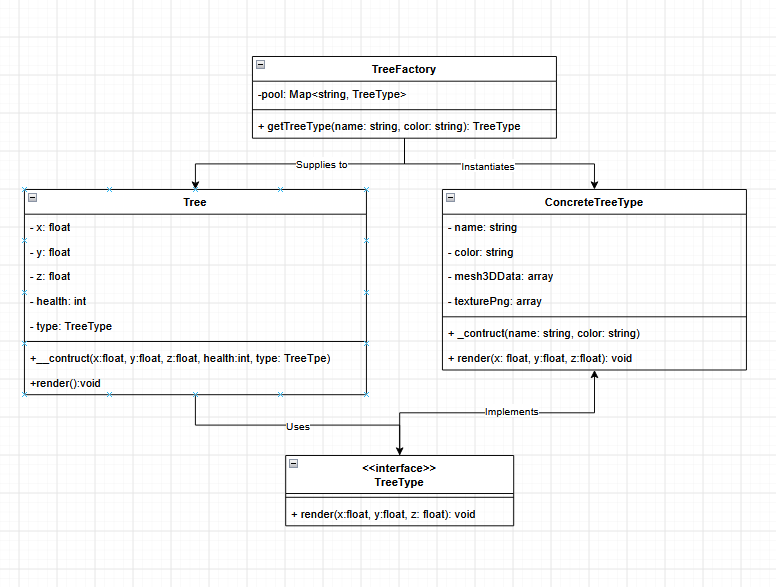

Flyweight
Patrón de diseño estructural
Video explicativoProblema
¿Qué duele antes del patrón?
En un juego se necesita renderizar un bosque con 1,000,000 de árboles. Cada árbol tiene un modelo 3D detallado, texturas en alta resolución, colisiones, una posición (x, y, z) en el mapa y un nivel de vida actual.
class Tree {
private float $x; // 8 bytes
private float $y; // 8 bytes
private float $z; // 8 bytes
private int $health; // 4 bytes
private string $name; // 30 bytes
private string $color; // 20 bytes
private array $mesh3DData; // 5MB
private array $texturePng; // 10MB
public function __construct(float $x, float $y, float $z, int $health) {
$this->x = $x;
$this->y = $y;
$this->z = $z;
$this->health = $health;
// se carga por cada arbol
$this->mesh3DData = Loader::loadMesh("pine_tree.obj");
$this->texturePng = Loader::loadTexture("pine_texture.png");
}
}
}El problema ocurre cuando se intenta renderizar un bosque realista con, digamos, 1,000,000 de árboles. Si cada árbol se instancia como un objeto independiente que carga su propio modelo 3D y texturas de alta resolución (unos 15 MB por objeto), el juego consumirá rápidamente gigabytes de memoria RAM hasta colapsar con un error de Out of Memory antes de que el jugador pueda ver el mapa. Duplicar datos idénticos por cada coordenada individual es un desperdicio masivo que hace que el sistema sea imposible de ejecutar.
Solución
El patrón Flyweight resuelve este problema separando
el estado de cada árbol en dos partes. Por un lado está el
estado intrínseco: los datos que son idénticos para
todos los árboles de una misma especie, como el modelo 3D
(mesh3DData)
y la textura (texturePng).
Ese estado se guarda una sola vez en un objeto compartido
(el flyweight) en lugar de duplicarse en cada árbol.
Por otro lado está el estado extrínseco: los datos que sí
cambian entre árboles, como la posición (x, y, z)
y la vida actual. Este estado no se guarda dentro del flyweight, sino que el
objeto que lo usa (Tree)
se lo pasa cada vez que lo necesita. Una fábrica
(TreeFactory)
se encarga de crear un único flyweight por combinación de especie/color y
reutilizarlo, así que con solo unas pocas decenas de objetos pesados en
memoria se pueden representar millones de árboles.
Diagrama

Fuente. Elaboración propia.
Código
interface TreeType {
public function render(float $x, float $y, float $z, int $health): void;
}
class ConcreteTreeType implements TreeType {
private array $mesh3DData;
private array $texturePng;
public function __construct(private string $name, private string $color) {
$this->mesh3DData = Loader::loadMesh("$name.obj");
$this->texturePng = Loader::loadTexture("$name.png");
}
public function render(float $x, float $y, float $z, int $health): void {
Renderer::draw($this->mesh3DData, $this->texturePng, $x, $y, $z, $health);
}
}
class TreeFactory {
private static array $pool = [];
public static function getTreeType(string $name, string $color): TreeType {
$key = "$name:$color";
return self::$pool[$key] ??= new ConcreteTreeType($name, $color);
}
}
class Tree {
public function __construct(
private float $x, private float $y, private float $z,
private int $health, private TreeType $type
) {}
public function render(): void {
$this->type->render($this->x, $this->y, $this->z, $this->health);
}
}
$pino = TreeFactory::getTreeType("pine_tree", "green");
$bosque = [new Tree(120.5, 0, 340.2, 100, $pino), new Tree(121.0, 0, 341.0, 100, $pino)];
// 1,000,000 de árboles, pero solo 1 ConcreteTreeType por especie/color en memoria¿Cuándo usarlo?
Cuándo SÍ
Refactoring Guru (s.f.) es bastante claro en esto: Flyweight no es una buena práctica de diseño que se pueda aplicar siempre, es una optimización puntual que solo vale la pena en casos concretos.
- Cuando hay que crear una cantidad enorme de objetos parecidos (cientos de miles, como los árboles del bosque) y eso ya está consumiendo toda la memoria disponible.
- Cuando gran parte del estado se repite entre esos objetos y se puede separar con claridad entre lo compartido (intrínseco) y lo que cambia por instancia (extrínseco). Si casi nada se repite, no hay mucho que ganar.
- Cuando ya se comprobó que el problema es de memoria, no solo una sospecha. Meterlo "por si acaso" antes de medir el consumo real es adelantarse a un problema que quizás nunca llega.
Cuándo NO
El mismo Refactoring Guru (s.f.) también advierte sobre el costo de meter Flyweight donde no hace falta:
- Cuando la cantidad de objetos es manejable y la memoria no es un problema real: agregar la fábrica y separar el estado en dos partes solo suma una capa de indirección de la que nadie se beneficia.
- Cuando el estado de los objetos casi no se repite entre sí: si cada instancia termina siendo prácticamente única, dividirla en intrínseco/extrínseco no ahorra memoria de verdad, solo complica el diseño.
- Cuando recalcular el estado extrínseco sale caro: si el dato que ya no se guarda en el flyweight hay que reconstruirlo cada vez que se llama a un método, se puede terminar cambiando RAM por ciclos de CPU. A eso hay que sumarle que el código queda menos obvio: cualquiera que entre nuevo al proyecto se va a preguntar por qué el estado de una misma entidad está partido en dos clases distintas.
Ejemplo real
Java implementa Flyweight en su clase Integer.
Al hacer autoboxing de valores entre -128 y 127, la JVM no crea un objeto nuevo
cada vez: reutiliza instancias ya creadas desde una caché interna
(IntegerCache),
documentada en el propio Javadoc de la clase (Oracle, s.f.). Por eso
Integer.valueOf(100) == Integer.valueOf(100)
es true,
pero fuera de ese rango cada valor sí genera un objeto distinto: es exactamente el
balance intrínseco/extrínseco del patrón, aplicado a los enteros más usados.
En el mundo PHP hay un caso equivalente en Doctrine DBAL. Su registro de tipos,
Type::getType(),
no crea un objeto Type
nuevo por cada columna de cada entidad: mantiene un registro interno y devuelve
siempre la misma instancia para un mismo tipo (por ejemplo, "integer"
o "datetime"),
tal como documenta el propio proyecto (Doctrine Project, s.f.). Con miles de entidades mapeadas,
esa reutilización evita instanciar el mismo objeto de tipo una y otra vez.
Referencias
- Doctrine Project. (s.f.). Custom mapping types. Doctrine DBAL Documentation. doctrine-project.org/.../types.html
- Oracle. (s.f.). Integer (Java SE documentation). docs.oracle.com/.../Integer.html
- Refactoring Guru. (s.f.). Flyweight. https://refactoring.guru/design-patterns/flyweight